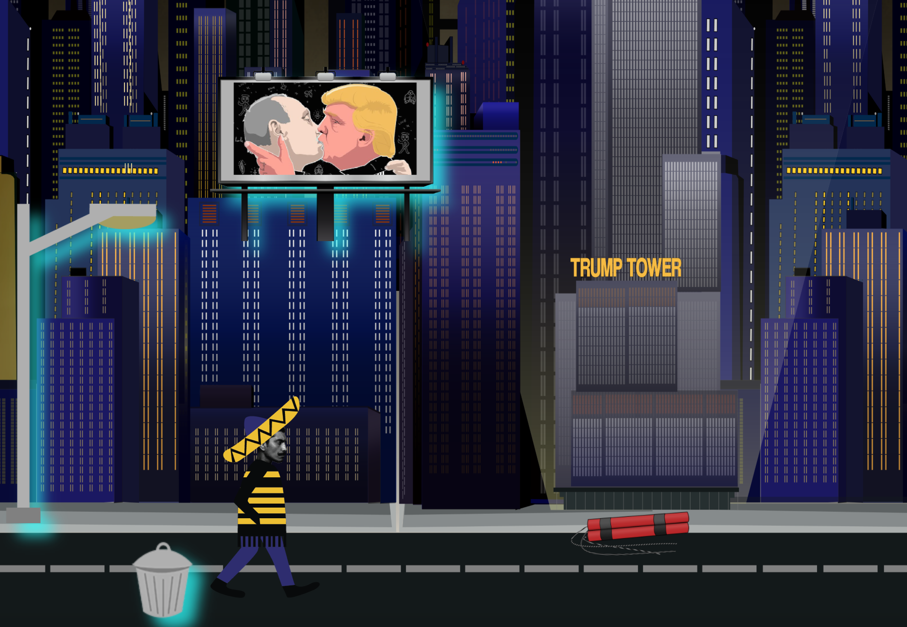
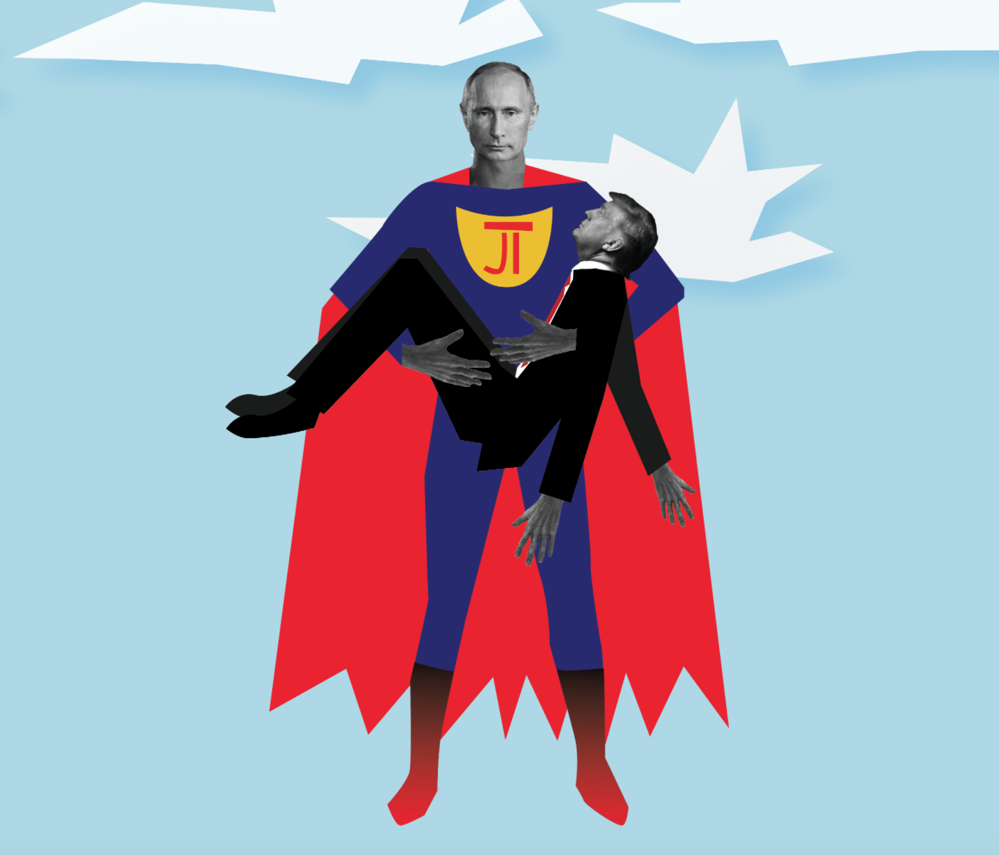
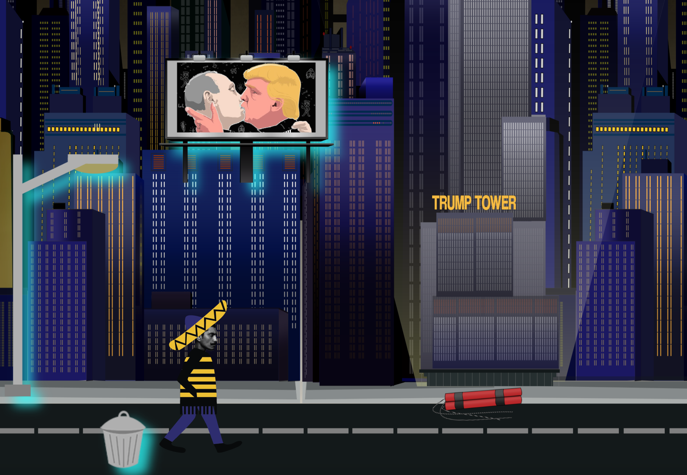
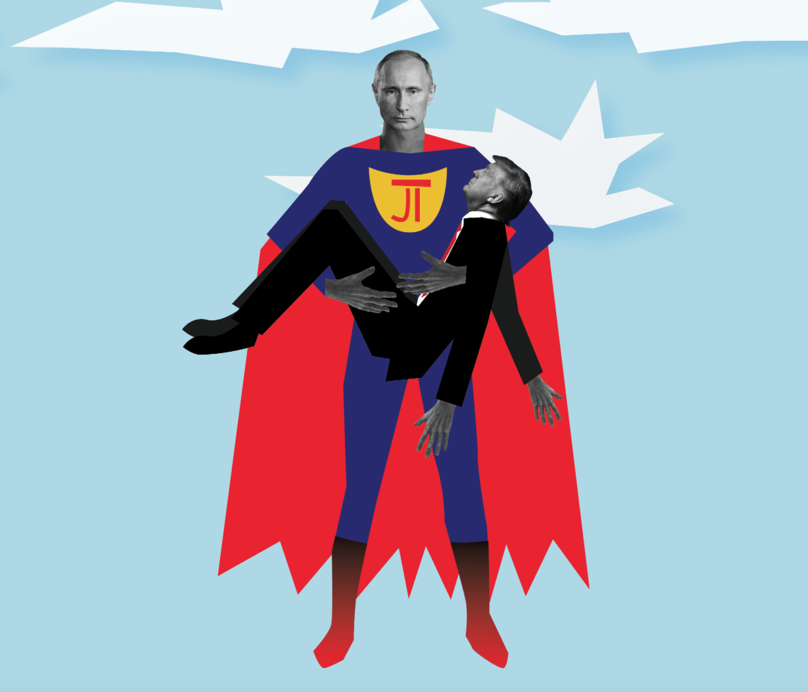

KEA
MMD student
MMD student
In this project we worked in groups. We needed to create an interactive animation of a scene from our favourite movie, novel or story. We chose "Superman movie". There was special focus on a good User Experience for young adults interested in art.
This project covered every aspect of multimedia development: the process, group work, design development, storytelling, interactivity, usability, coding and presentation. Also we needed to include at least 3 “Easter eggs” that are not crucial to the storyline. Or given style was:Rusian constructivisim and piece of music: Shostakovich: Symphony No. 2 (Leningrad) Part 1.
Each of group members were individual tasks and responsibilities. I was responsible about UX. If you want to see our final interactive story about how Superman (Putin) saves Luisa Lane (Donald Trump), click here:
 


